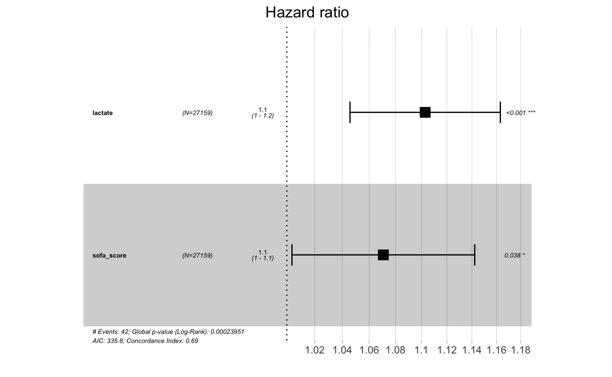
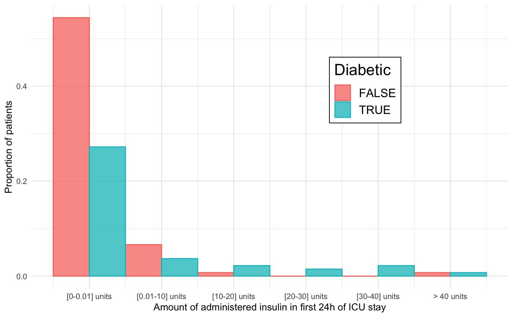

ricu.RmdAbstract
The abstract of the article.
Collection of health records has seen a significant rise in the recent years . This has opened an opportunity for a large body of data-driven research oriented towards improving patient care and outcomes, together with helping clinicians in decision-making .
For instance, an example of a problem that has received much attention from the machine learning community is early prediction of sepsis in ICU . Interestingly, there is evidence that a large proportion of the publications are based on the same dataset , the Medical Information Mart for Intensive Care (MIMIC) , which shows a systematic lack of external validation. Part of this problem might well be the lack of a computational infrastructure handling multiple datasets. The MIMIC-III dataset consists of 26 different tables containing about 20GB of data. Handling data of this form can require considerable technical profficiency and knowledge of different programming languages. Co-integrating multiple different datasets of this form is, naturally, even more demanding.
The aim of the package is to provide the computational infrastructure which allows users to access complex research questions as easily as possible. The package also aims to enable users to write dataset-agnostic code which can simplify implementation and shorten the necessary time for prototyping code to different datasets. In particular, the package handles three large, publicly available intensive care databases: the already mentioned MIMIC-III database from the Beth Israel Deaconess Medical Center in Boston, Massachusetts, the eICU Collaborative Research Database , containing data collected from 208 hospitals across the United States, and the HiRID database from the Department of Intensive Care Medicine of the Bern University Hospital, Switzerland. Together with this, much of the functionality used is also aimed to accommodate for addition of possible additional datasets, provided by the user. The work most similar to ours is that of and . However, these works address only the MIMIC-III dataset and do not have an emphasis on dataset inter-operability.
The structure of the manuscript is as follows. In Section we outline the different types of data useful for research related to intensive care medicine. We explain the most important parts of the package functionality which are used to handle the different data types. In Section we provide simple examples which illustrate how some simple research questions can be explored in only a couple of lines of code.
In this Section we go over the categories of data useful for research problems related to intensive care medicine. The categories we define are fairly broad and somewhat loosely defined, as this is not the main focus of the manuscript.
We focus on two simple examples with which we try to cover most of the data types described in Section .
The first example we look at is the association of lactate levels and mortality. This problem has been studied before and it is widely accepted that both static and dynamic lactate indices are associated with increased mortality . We quickly look at how one might fit a time-varying proportional hazards Cox model in order to investigate this problem. We additionally include the Sequential Organ Failure Assessment (SOFA) score as a general predictor of illness severity.
source <- "mimic_demo" # data loading tbl <- fill_gaps(load_concepts(c("lactate", "death"), source, verbose = F)) tbl <- merge(tbl, sofa(source, verbose = F), all = T) tbl <- tbl[, c(meta_cols(tbl), "lactate", "sofa_score", "death"), with = F] tbl <- tbl[, lactate := nafill(lactate, "locf")] tbl <- tbl[, lactate := nafill(lactate, fill = 1)] tbl[, event := as.integer(sum(death, na.rm = T) > 0), by = eval(id(tbl))] tbl[, event := last_event(event), by = eval(id(tbl))] tbl[, next_charttime := charttime+1L] # model fitting cox_time_mod <- coxph(Surv(charttime, next_charttime, event) ~ lactate + sofa_score, data = tbl)
We visualize the results of the model  A simple exploration already shows that the increased values of lactate are associated with mortality, even after adjusting for the SOFA score.
The next example we turn to covers the usage of co-morbidities and treatment related information. We look at the amount of insulin administered to patients in the first 24 hours from their ICU admission. In particular, we investigate if patients who are diabetic receive more insulin in the first day of their stay. We extract the data as follows:
source <- "mimic_demo" ins_breaks <- c(0.01, 10, 20, 30, 40) cohort <- stay_windows(source) ins_treat <- load_concepts("insulin", source) ins_treat <- ins_treat[get(index(ins_treat)) <= 24L] ins_treat <- ins_treat[, list(ins_sum = .bincode(sum(insulin), breaks = c(-Inf, ins_breaks, Inf))-1), by = eval(id(ins_treat))] cohort <- merge(cohort, ins_treat, by = id(cohort), all.x = T) cohort[, Diabetic := get(id(cohort)) %in% diabetes(source)] cohort[is.na(ins_sum), "ins_sum"] <- 0
After this, we can visualize the difference between the two groups with a histogram:  The plot might suggest that diabetic patients do receive more insulin that non-diabetic patients, in the first day of ICU stay.